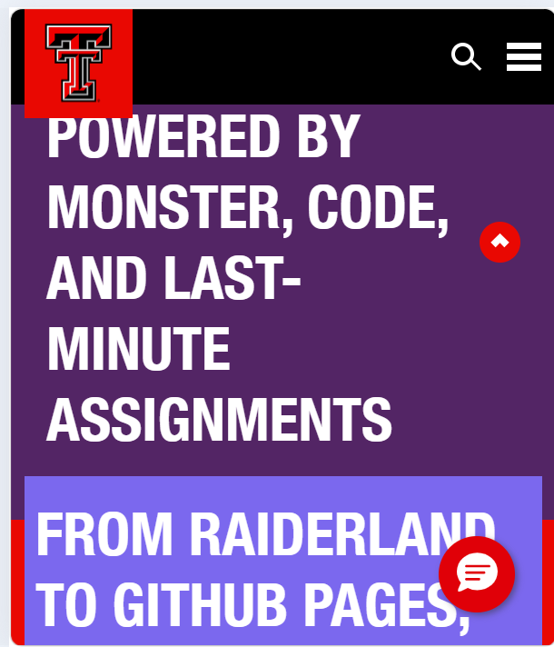

Week 04 Exercise 01: Dev Tools Vandalism
For this exercise, I used the browser developer tools to temporarily modify the Texas Tech University homepage. I chose ttu.edu because Texas Tech is my university, so it made the exercise feel more connected to my actual course portfolio.
I changed one of the main homepage headings to say, “Texas Tech: Powered by Monster, Code, and Last-Minute Assignments.” I also edited another text section to say, “From Raiderland to GitHub Pages, we are building websites one broken index file at a time.”
In addition to changing the HTML text, I also changed several CSS styles using the Styles panel. I changed the background color, text color, font size, text shadow, and border to make the page look more dramatic and customized. These edits were temporary and only visible in my own browser.
This exercise helped me practice using the Elements panel to edit HTML content and the Styles panel to experiment with CSS changes directly on a live website.
